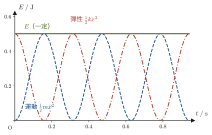
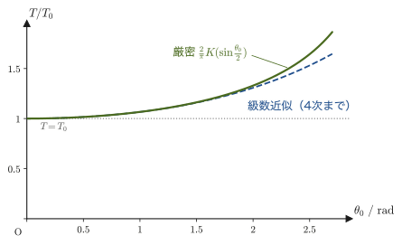
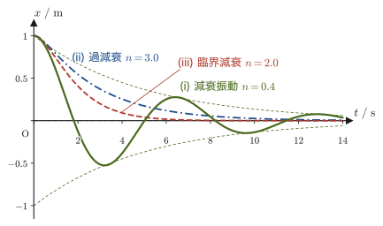
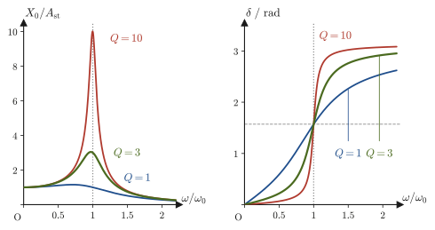

第7章単振動・減衰振動・強制振動
ブランコを押すと，一定のリズムで前後に揺れ続ける．ギターの弦をはじくと，音として聞こえる速さで細かく振動する．ビルは地震の揺れに合わせて，自分自身の固有のリズムで揺れる．こうした「行ったり来たりを繰り返す運動」——振動——は，自然界のいたるところに現れる，力学のもう一つの主役である．高校物理では，ばね振り子の運動が $x=A\sin(\omega t+\varphi)$ のような式で表され，周期が $T=2\pi\sqrt{m/k}$ になることを公式として学んだはずである．この章では，その公式が運動方程式 $m\ddot x=-kx$ という2階の微分方程式そのものから導かれることを，一行も飛ばさずに確認する．
さらに，現実のばね振り子には必ず空気抵抗や摩擦のような「抵抗力」がはたらく．抵抗があると，振動はしだいに減衰していくが，そのしかたは抵抗の強さによって「振動しながら減衰する場合」「振動せずに減衰する場合」「その境目の場合」の3通りに分かれる——ドアクローザーがゆっくり静かにドアを閉める仕組みと，自動車のサスペンションが路面の凹凸を吸収しながらも揺れすぎない仕組みは，実はこの3つの場合分けの中にある．そして，抵抗のある振動子に外部から周期的な力を加え続けると，特定の振動数で振幅が非常に大きくなる「共振（共鳴）」という現象が起こる．電子レンジがマイクロ波で水分子を選択的に温める仕組みも，ブランコを「タイミングよく」押すと大きく揺れる経験も，橋やビルが特定の周波数の揺れに弱い理由も，すべてこの共振の物理でつながっている．
本章の内容は，姉妹編「大学数学（AD 02）」第35章・第36章・第38章（2階線形微分方程式とその演算子法による解法）で学んだ抽象的な解法を，初めて具体的な物理現象に応用する場面でもある．AD 02 で学んだことが「実際に何を意味していたのか」が，ここで初めて実感できるはずである．
- ばね振り子の運動方程式 $m\ddot x+kx=0$ を，特性方程式 $m\lambda^2+k=0$ を経て解き，一般解が $x=C_1\cos\omega t+C_2\sin\omega t$ の形になることの導出（AD 02 第35章の具体例）
- 単振動のエネルギー保存則の証明と，単振り子の運動方程式・周期の公式 $T_0=2\pi\sqrt{l/g}$（小振幅近似），振幅が大きいときのずれ
- 速度に比例する抵抗があるときの運動方程式 $m\ddot x+n\dot x+kx=0$ の特性方程式の判別式による3つの場合分け（減衰振動・過減衰・臨界減衰）と，それぞれの一般解
- 強制振動の運動方程式 $m\ddot x+n\dot x+kx=f_0\cos\omega t$ を，演算子法（AD 02 第38章）と複素数のテクニック（$f_0\cos\omega t\to f_0e^{i\omega t}$，実部をとる）で解く手順
- 共振（共鳴）曲線の形と，そのとがり具合を表す $Q$ 値，共振点の前後での位相のずれ
もとにしたノート：望月泰英『物理学ノート 力学』 pp. 19–21．
7.1 ばね振り子と単振動の一般解
壁に固定したばね（ばね定数 $k\ [\mathrm{N/m}]$）の先に質量 $m\ [\mathrm{kg}]$ のおもりをつなぎ，なめらかな床の上で水平方向にだけ動けるようにする．おもりの位置を，自然長の位置を原点とする座標 $x$ で表す（図7.1）．ばねを伸ばす・縮めるとフックの法則（Hooke's law）によりおもりは自然長の位置へ戻ろうとする向きに力を受け，その大きさは伸び（または縮み）$x$ に比例する．力の向きは常に変位と逆向きだから，$x$ 軸方向の力は
$$ F=-kx $$と書ける（$k\gt 0$）．これをニュートンの運動方程式 $m\ddot x=F$（第2章）に代入すると，
\begin{equation} m\ddot x=-kx \qquad\text{すなわち}\qquad m\ddot x+kx=0 \label{eq:7-shm-eom} \end{equation}が得られる．これが，ばね振り子の運動方程式である．$\ddot x$（エックス・ツードット，$x$ を時刻 $t$ で2回微分したもの，$\dd^2x/\dd t^2$）を含む2階の微分方程式なので，一般解には任意定数がちょうど2つ現れる（大学数学 第35章 35.3）．式 \eqref{eq:7-shm-eom} は，未知関数を $x$，独立変数を $t$ と読み替えれば，AD 02 第35章で扱った「定数係数2階線形同次微分方程式 $y''+ay'+by=0$」で $a=0,\ b=k/m$ とした特別な場合そのものである．以下，その具体的な解き方を順を追って確認する．
導出：特性方程式を使って式 \eqref{eq:7-shm-eom} を解く
式 \eqref{eq:7-shm-eom} は線形同次微分方程式なので，AD 02 第35章35.4で学んだとおり，指数関数 $x(t)=e^{\lambda t}$（$\lambda$ は未知の定数，実数とは限らない）の形の解を仮定して代入してみる．$\dot x=\lambda e^{\lambda t}$，$\ddot x=\lambda^2 e^{\lambda t}$ だから，
$$ m\lambda^2 e^{\lambda t}+k e^{\lambda t}=e^{\lambda t}\left(m\lambda^2+k\right)=0 $$である．指数関数は $e^{\lambda t}\neq0$（どんな $t,\lambda$ に対しても0にならない）ので，この式が恒等的に成り立つためには括弧の中身が0でなければならない：
\begin{equation} m\lambda^2+k=0 \label{eq:7-char-shm} \end{equation}これが式 \eqref{eq:7-shm-eom} の特性方程式（characteristic equation）である．これを $\lambda$ について解くと，
$$ \lambda^2=-\frac{k}{m} \qquad\therefore\ \lambda=\pm i\sqrt{\frac{k}{m}}=\pm i\omega, \qquad \omega\equiv\sqrt{\frac{k}{m}} $$$k\gt 0,\ m\gt 0$ なので $-k/m\lt 0$ となり，$\lambda$ は実数ではなく純虚数になる（$i$ は虚数単位，$i^2=-1$）．物理的には，これは「ずっと減衰せずに振動し続ける」ことに対応している（7.3節で見るように，$\lambda$ の実部が負であれば振幅は減衰し，実部が0なら減衰も増幅もしない）．$\lambda=\pm i\omega$ という2つの特性根が得られたので，AD 02 第35章35.4の結果（基本解 $y_1=e^{\lambda_1 t},\ y_2=e^{\lambda_2 t}$ の線形結合が一般解）より，一般解は
$$ x(t)=C_1'e^{i\omega t}+C_2'e^{-i\omega t} $$と書ける（$C_1',C_2'$ は複素数でもよい任意定数）．ここでオイラーの公式（Euler's formula，大学数学 第21章 21.4）$e^{i\theta}=\cos\theta+i\sin\theta$ を使って，$e^{i\omega t}=\cos\omega t+i\sin\omega t$，$e^{-i\omega t}=\cos\omega t-i\sin\omega t$ を代入すると，
$$ x(t)=C_1'(\cos\omega t+i\sin\omega t)+C_2'(\cos\omega t-i\sin\omega t) =(C_1'+C_2')\cos\omega t+i(C_1'-C_2')\sin\omega t $$ここで $x(t)$ は実際のおもりの位置だから実数でなければならない．そこで，新しい実数の定数として
$$ C_1\equiv C_1'+C_2',\qquad C_2\equiv i(C_1'-C_2') $$とおき直す（$C_1',C_2'$ が互いに複素共役であれば $C_1,C_2$ は実数になる．一般解の任意定数を実数の $C_1,C_2$ に取り直しても，表せる解の集合は変わらない）．すると，一般解は次の実数だけを使った形に書き直せる：
\begin{equation} x(t)=C_1\cos\omega t+C_2\sin\omega t \label{eq:7-shm-general} \end{equation}（導出終わり）
定理7.1 単振動の一般解
質量 $m$，ばね定数 $k$ のばね振り子の運動方程式 $m\ddot x+kx=0$ の一般解は，
\begin{equation} x(t)=C_1\cos\omega t+C_2\sin\omega t,\qquad \omega=\sqrt{\frac{k}{m}} \label{eq:7-shm-thm} \end{equation}である．$C_1,C_2$ は初期条件から定まる任意定数である．
定義7.1 角振動数・周期・振動数
式 \eqref{eq:7-shm-thm} の $\omega=\sqrt{k/m}\ [\mathrm{rad/s}]$ を角振動数（angular frequency）と呼ぶ．おもりが1往復するのにかかる時間を周期（period）$T\ [\mathrm{s}]$，1秒あたりの往復回数を振動数（frequency）$f\ [\mathrm{Hz}]$ といい，$\cos\omega t$ の周期性（$\omega(t+T)=\omega t+2\pi$）から
$$ T=\frac{2\pi}{\omega}=2\pi\sqrt{\frac{m}{k}},\qquad f=\frac{1}{T}=\frac{\omega}{2\pi} $$という関係になる．$T=2\pi\sqrt{m/k}$ は高校物理で公式として暗記したばね振り子の周期の式そのものであり，ここでは運動方程式 $m\ddot x+kx=0$ を実際に解くことによって導かれたことに注意しよう．なお，$\omega$ という文字は第6章で極座標の角速度 $\dot\theta$ にも使ったが，ここでは「振動の速さ」を表す量であり，実際に何かが回転しているわけではない（ただし7.4節で見るように，$\omega t$ を複素平面上の回転角として扱うテクニックを使うので，無関係というわけでもない）．
式 \eqref{eq:7-shm-thm} の $C_1,C_2$ は，おもりを「時刻 $t=0$ にどこに置き，どんな速度を与えたか」（初期条件）で決まる．図7.1のように，ばねを自然長から距離 $A$ だけ引っぱって静かに手を放す場合を考えると，初期条件は
$$ x(0)=A,\qquad \dot x(0)=0 $$である．式 \eqref{eq:7-shm-thm} に $t=0$ を代入すると $x(0)=C_1\cos0+C_2\sin0=C_1$ なので，$x(0)=A$ より $C_1=A$．また式 \eqref{eq:7-shm-thm} を微分すると $\dot x(t)=-C_1\omega\sin\omega t+C_2\omega\cos\omega t$ となり，$t=0$ を代入すると $\dot x(0)=C_2\omega$ なので，$\dot x(0)=0$（かつ $\omega\neq0$）より $C_2=0$．したがって，この初期条件のもとでの解は
\begin{equation} x(t)=A\cos\omega t \label{eq:7-shm-particular} \end{equation}となる．これが，高校物理で最初に習うばね振り子の単振動の式である．
イメージ：なぜ $\cos\omega t$ と $\sin\omega t$ の組み合わせなのか
式 \eqref{eq:7-shm-thm} は，位相の異なる無数の単振動 $A\cos(\omega t-\delta)$（$A,\delta$ は定数）をすべて表現できる．実際，三角関数の加法定理より $A\cos(\omega t-\delta)=A\cos\delta\cos\omega t+A\sin\delta\sin\omega t$ であり，$C_1=A\cos\delta,\ C_2=A\sin\delta$ とおけば式 \eqref{eq:7-shm-thm} の形に一致する．つまり $C_1,C_2$ を決めることは，振動の「振幅 $A=\sqrt{C_1^2+C_2^2}$」と「位相（スタート地点のずれ）$\delta=\arctan(C_2/C_1)$」を決めることと同じである．初期条件が変われば，同じばね・同じおもりでも振幅や位相の異なる単振動になるが，角振動数 $\omega=\sqrt{k/m}$（したがって周期 $T$）はばねとおもりだけで決まり，初期条件にはよらない——これが「単振動は初期条件によらず一定の周期で揺れる」という性質の理由である．
例題7.1 ばね定数と周期
ばね定数 $k=100\ \mathrm{N/m}$ のばねに質量 $m=1\ \mathrm{kg}$ のおもりをつないでばね振り子をつくった．角振動数 $\omega$ と周期 $T$ を求めよ．
解答 定義7.1より，
$$ \omega=\sqrt{\frac{k}{m}}=\sqrt{\frac{100\ \mathrm{N/m}}{1\ \mathrm{kg}}}=\sqrt{100\ \mathrm{s^{-2}}}=10\ \mathrm{rad/s} $$（$\mathrm{N/(kg)}=\mathrm{(kg\,m/s^2)/kg}=\mathrm{m/s^2}$ なので，$k/m$ の単位は $\mathrm{m/s^2}\div\mathrm{m}=\mathrm{s^{-2}}$ となり，平方根をとると $\mathrm{s^{-1}}=\mathrm{rad/s}$ になって次元があっている）．周期は
$$ T=\frac{2\pi}{\omega}=\frac{2\pi}{10}=\frac{\pi}{5}\ \mathrm{s}\approx0.628\ \mathrm{s} $$例題7.2 単振動する物体の位置・速度・加速度
振幅 $A=0.1\ \mathrm{m}$，角振動数 $\omega=10\ \mathrm{rad/s}$ で単振動する物体（式 \eqref{eq:7-shm-particular} の形）について，時刻 $t=0.1\ \mathrm{s}$ での位置 $x$，速度 $\dot x$，加速度 $\ddot x$ を求めよ．
解答 $x(t)=A\cos\omega t$ を順に微分すると，
$$ x(t)=A\cos\omega t,\qquad \dot x(t)=-A\omega\sin\omega t,\qquad \ddot x(t)=-A\omega^2\cos\omega t=-\omega^2x(t) $$$t=0.1\ \mathrm{s}$，$\omega t=10\times0.1=1.0\ \mathrm{rad}$（ラジアン）を代入すると，
$$ x(0.1)=0.1\cos(1.0)=0.1\times0.5403\approx0.0540\ \mathrm{m} $$ $$ \dot x(0.1)=-0.1\times10\times\sin(1.0)=-1\times0.8415\approx-0.841\ \mathrm{m/s} $$ $$ \ddot x(0.1)=-10^2\times0.0540\approx-5.40\ \mathrm{m/s^2} $$加速度が $\ddot x=-\omega^2x$ という，位置に比例し向きが逆（常に原点へ向かう）という単振動の特徴的な関係を満たしていることが確認できる．
7.2 単振動のエネルギーと単振り子
7.2.1 単振動のエネルギー保存則
ばね振り子が単振動しているとき，おもりの運動エネルギーとばねの弾性エネルギーの和（力学的エネルギー）はどうなるだろうか．運動方程式そのものから，これを直接確かめてみる．
導出：単振動のエネルギー保存則
運動方程式 $m\ddot x=-kx$（式 \eqref{eq:7-shm-eom}）の両辺に $\dot x$ を掛ける：
$$ m\ddot x\cdot\dot x=-kx\cdot\dot x $$ここで，$\ddot x=\dfrac{\dd\dot x}{\dd t}$，$\dot x=\dfrac{\dd x}{\dd t}$ であることを使うと，左辺は $\dfrac{\dd\dot x}{\dd t}\cdot\dot x$，右辺は $x\cdot\dfrac{\dd x}{\dd t}$ の形をしている．両辺を時刻 $t$ で積分する：
$$ \int m\,\frac{\dd\dot x}{\dd t}\cdot\dot x\,\dd t=-\int kx\cdot\frac{\dd x}{\dd t}\,\dd t $$左辺は $\dfrac{\dd}{\dd t}\!\left(\dfrac12\dot x^2\right)=\dot x\cdot\dfrac{\dd\dot x}{\dd t}$（合成関数の微分／$\dfrac{\dd}{\dd t}\dot x^2=2\dot x\ddot x$ の逆）であることから $m\displaystyle\int\dfrac{\dd}{\dd t}\!\left(\dfrac12\dot x^2\right)\dd t=\dfrac12m\dot x^2$ に，右辺も同様に $-k\displaystyle\int\dfrac{\dd}{\dd t}\!\left(\dfrac12x^2\right)\dd t=-\dfrac12kx^2$ になる（積分定数はまとめて右辺に $C$ として置く）：
$$ \frac12m\dot x^2=-\frac12kx^2+C $$すなわち，
\begin{equation} \frac12m\dot x^2+\frac12kx^2=C\quad(\text{一定}) \label{eq:7-energy-shm} \end{equation}左辺の第1項 $\frac12m\dot x^2$ はおもりの運動エネルギー，第2項 $\frac12kx^2$ はばねに蓄えられた弾性エネルギー（高校物理での公式 $\frac12kx^2$ そのもの）である．右辺の $C$ は時刻 $t$ によらない定数だから，運動エネルギーと弾性エネルギーの和（力学的エネルギー）は，運動の間じゅう一定に保たれる．
（導出終わり）
法則7.1 単振動のエネルギー保存則
ばね振り子が単振動しているとき，運動エネルギーと弾性エネルギーの和は時刻によらず一定である：
\begin{equation} \frac12m\dot x^2+\frac12kx^2=C\ (\text{一定}) \label{eq:7-energy-law} \end{equation}これは，重力や弾性力のような保存力だけがはたらく系で成り立つ「力学的エネルギー保存則」（第4章 4.5節）を，ばね振り子という具体例で確かめたものである．初期条件 $x(0)=A,\ \dot x(0)=0$ の場合，式 \eqref{eq:7-energy-law} に $t=0$ を代入すると $C=\frac12k A^2$（運動エネルギーが0，弾性エネルギーが最大の瞬間の値）になる．

例題7.3 エネルギー保存則の検算
式 \eqref{eq:7-shm-particular} の $x(t)=A\cos\omega t$（したがって $\dot x(t)=-A\omega\sin\omega t$）を式 \eqref{eq:7-energy-law} の左辺に代入し，確かに時刻によらない定数 $C=\frac12kA^2$ になることを確かめよ．
解答 代入すると，
$$ \frac12m\dot x^2+\frac12kx^2 =\frac12m(A\omega\sin\omega t)^2+\frac12k(A\cos\omega t)^2 =\frac12mA^2\omega^2\sin^2\omega t+\frac12kA^2\cos^2\omega t $$ここで $\omega^2=k/m$（定義7.1）なので $mA^2\omega^2=mA^2\cdot\dfrac{k}{m}=kA^2$ となり，
$$ =\frac12kA^2\sin^2\omega t+\frac12kA^2\cos^2\omega t =\frac12kA^2\left(\sin^2\omega t+\cos^2\omega t\right) $$三角関数の基本公式 $\sin^2\theta+\cos^2\theta=1$（高校数学，単位円上の点の座標が $(\cos\theta,\sin\theta)$ であることの帰結）より，
$$ \frac12m\dot x^2+\frac12kx^2=\frac12kA^2\cdot1=\frac12kA^2 $$となり，時刻 $t$ に依存しない定数 $C=\frac12kA^2$ であることが確かめられた．
7.2.2 単振り子
ばね振り子と並んで，振動の代表例としてもう一つ重要なのが，糸やごく軽い棒の先におもりをつるした単振り子（simple pendulum）である．時計の振り子やブランコは，この単振り子に近い運動をする．
導出：単振り子の運動方程式と周期
おもりは長さ $l$ の円弧上を動くので，弧の長さは $s=l\theta$（$\theta$ はラジアン），弧に沿った速さは $\dot s=l\dot\theta$，接線方向の加速度は $\ddot s=l\ddot\theta$ である（第3章 3.4節の接線・法線加速度の考え方）．接線方向（運動方向）にはたらく力は，重力の接線成分だけである．図7.3のように $\theta$ を振れの向きに正にとると，おもりが正の向き（$\theta\gt 0$）にあるとき，重力の接線成分 $mg\sin\theta$ は $\theta$ を減らす向き（原点へ戻す向き）にはたらくので，接線方向の運動方程式は
$$ m\,l\ddot\theta=-mg\sin\theta \qquad\therefore\ \ddot\theta=-\frac{g}{l}\sin\theta $$である（糸の張力は常に糸の方向＝法線方向を向くので，接線方向の運動方程式には現れない）．この式には $\sin\theta$ という非線形な項が含まれるため，このままでは（ばね振り子のときのような）指数関数を仮定する解法が使えない．そこで，振れ角 $\theta$ が十分小さい場合を考える．$\theta$ をラジアンで測ったとき，$\theta$ が小さいほど $\sin\theta$ は $\theta$ に近づく（大学数学 第4章 テイラー展開・マクローリン展開で $\sin\theta=\theta-\theta^3/3!+\cdots$ となることから，$\theta^3$ 以降の項を無視すればよい）．これを小振幅近似（小角近似）$\sin\theta\approx\theta$ という．この近似のもとで運動方程式は
\begin{equation} \ddot\theta+\frac{g}{l}\theta=0 \label{eq:7-pendulum-eom} \end{equation}となり，これはばね振り子の式 \eqref{eq:7-shm-eom}（$m\ddot x+kx=0$，すなわち $\ddot x+(k/m)x=0$）とまったく同じ形をしている——未知関数が $x$ から $\theta$ に，$k/m$ が $g/l$ に置き換わっただけである．したがって，7.1節の結果がそのまま使え，一般解は
$$ \theta(t)=C_1\cos\omega_0 t+C_2\sin\omega_0 t,\qquad \omega_0=\sqrt{\frac{g}{l}} $$となる．よって，単振り子の（小振幅近似での）周期は
\begin{equation} T_0=\frac{2\pi}{\omega_0}=2\pi\sqrt{\frac{l}{g}} \label{eq:7-pendulum-T0} \end{equation}である．これが，高校物理で公式として学んだ単振り子の周期の式である．周期が質量 $m$ によらないこと，振幅（の小さいうちは）によらないことも，この式から読み取れる．
（導出終わり）
公式7.1 単振り子の周期（小振幅近似）
長さ $l$ の単振り子の，振れ角が十分小さいときの周期は，おもりの質量によらず，
$$ T_0=2\pi\sqrt{\frac{l}{g}} $$である（$g$ は重力加速度）．
注意：振幅が大きいときのずれ
振れ角 $\theta_0$（最大の振れ角，振幅）が大きくなると，$\sin\theta\approx\theta$ の近似が悪くなり，周期は式 \eqref{eq:7-pendulum-T0} の $T_0$ から少しずれて長くなる．近似を使わずに式 \eqref{eq:7-pendulum-eom} の手前の厳密な方程式 $\ddot\theta=-(g/l)\sin\theta$ からエネルギー保存則を使って周期を計算すると（第一種完全楕円積分 $K(k)$ を用いて），
$$ T(\theta_0)=T_0\cdot\frac{2}{\pi}K\!\left(\sin\frac{\theta_0}{2}\right) $$という厳密な式になることが知られている．これを $\theta_0$ のべき級数に展開すると，
\begin{equation} T(\theta_0)=T_0\left(1+\frac{1}{16}\theta_0^2+\frac{11}{3072}\theta_0^4+\cdots\right) \label{eq:7-pendulum-series} \end{equation}となる．たとえば $\theta_0=30^\circ\ (=\pi/6\ \mathrm{rad}\approx0.524)$ では，$T/T_0\approx1.017$，つまり厳密な周期は小振幅近似より約1.7 %長い．振れ角が数度程度（時計の振り子など）ならこのずれは無視できるが，大きく振れる場合（体育館の吊り輪やブランコを大きく漕ぐ場合など）は無視できなくなる．

例題7.4 単振り子の周期と大振幅のずれ
長さ $l=1.0\ \mathrm{m}$ の単振り子がある．(1) 小振幅近似での周期 $T_0$ を求めよ（$g=9.8\ \mathrm{m/s^2}$）．(2) 振れ角の最大値が $\theta_0=30^\circ$ のとき，厳密な周期は $T_0$ より約何 % 長いか，式 \eqref{eq:7-pendulum-series} を使って見積もれ．
解答 (1) 式 \eqref{eq:7-pendulum-T0} に代入して，
$$ T_0=2\pi\sqrt{\frac{1.0\ \mathrm{m}}{9.8\ \mathrm{m/s^2}}}=2\pi\sqrt{0.1020\ \mathrm{s^2}}=2\pi\times0.3194\ \mathrm{s}\approx2.007\ \mathrm{s} $$(2) $\theta_0=30^\circ=\pi/6\ \mathrm{rad}\approx0.5236\ \mathrm{rad}$ を式 \eqref{eq:7-pendulum-series} に代入すると，
$$ \frac{T}{T_0}\approx1+\frac{1}{16}(0.5236)^2+\frac{11}{3072}(0.5236)^4 \approx1+0.01714+0.00027\approx1.0174 $$したがって，厳密な周期は小振幅近似より約 $1.7\ \%$ 長くなる（楕円積分による厳密値との比較でも同じく約 $1.7\ \%$ であり，級数を4次までで打ち切った近似は厳密値とよく一致する）．おもりの質量はどちらの計算にも現れないことに注意する．
7.3 減衰振動 — 抵抗があるときの3つの場合
現実のばね振り子には，空気抵抗や，おもりと床の間の（粘性）摩擦のような，運動を妨げる力（抵抗力）がはたらく．こうした抵抗力は，速さが大きいほど強くはたらくことが実験的に知られており，速さがそれほど大きくない範囲では，速度 $\dot x$ に比例するとしてよい．比例定数を空気抵抗係数 $n\ [\mathrm{N\cdot s/m}]$（$n\gt 0$）とする．これは第5章 5.2節で抵抗力を $-B\bm v$ と書いたときの $B$ と同じ量である（この章では，慣例にしたがって $n$ と書く．第5章の $b=B/m$ は，ここでの $n/m$ にあたる）．
注意：抵抗力の向きと符号の付け方
運動方程式を立てるときは，あらかじめ決めた座標軸の正の向きにしたがって各力の符号を書き下す，という約束を絶対に崩してはいけない．抵抗力は「常に運動を妨げる向き」，すなわち速度 $\dot x$ と逆向きにはたらく．おもりが $\dot x\gt 0$（$x$ の正の向き）に動いているとき，抵抗力は $x$ の負の向きにはたらくので，その $x$ 成分は $-n\dot x$ と書ける．おもりが $\dot x\lt 0$ に動いているときは $-n\dot x\gt 0$ となり，やはり運動を妨げる向き（正の向き）に力がはたらいていて符号は正しい——つまり $-n\dot x$ という1つの式で，どちら向きに動いていても「速度と逆向き」という抵抗力の性質を正しく表せている．力の大きさそのものを表す量（この場合 $n\dot x$）の符号を，運動の向きに応じてその場その場で判断して書き換えると混乱のもとになる．常に「力 $=n\times(-\dot x)$」という決まった式を使い，符号は自動的に決まるようにするのがよい．
したがって，ばねの復元力 $-kx$ と抵抗力 $n(-\dot x)$ の両方を受けるおもりの運動方程式は，
$$ m\ddot x=-kx+n(-\dot x) $$すなわち，
\begin{equation} m\frac{\dd^2x}{\dd t^2}+n\frac{\dd x}{\dd t}+kx=0 \label{eq:7-damped-eom} \end{equation}となる．これが，抵抗のあるばね振り子（減衰振動子）の運動方程式である．
導出：特性方程式と3つの場合分け
式 \eqref{eq:7-damped-eom} も線形同次微分方程式なので，7.1節と同じく $x(t)=e^{\lambda t}$ を仮定して代入すると，$e^{\lambda t}(m\lambda^2+n\lambda+k)=0$ となり，$e^{\lambda t}\neq0$ より特性方程式
\begin{equation} m\lambda^2+n\lambda+k=0 \qquad\cdots\ \text{Ⓐ} \label{eq:7-char-damped} \end{equation}が得られる．これは $\lambda$ についての2次方程式なので，解の公式より
$$ \lambda=\frac{-n\pm\sqrt{n^2-4mk}}{2m} $$となる．判別式 $D=n^2-4mk$ の符号によって，根の様子が3通りに分かれる（AD 02 第35章35.5の場合分けと同じ構造である）．$m,n,k$ はすべて正の数なので，実根が現れる場合はその実根は必ず負になる（$\sqrt{n^2-4mk}\lt n$ なので分子 $-n\pm\sqrt{n^2-4mk}\lt 0$）——つまり，抵抗があるかぎり振幅は時間とともに必ず0へ近づき，勝手に増幅することはない．
(i) $D=n^2-4mk\lt 0$（相異なる2つの虚数解） 根は互いに共役な複素数 $\lambda_1=\alpha+i\omega_d,\ \lambda_2=\alpha-i\omega_d$ になる．ここで
$$ \alpha=-\frac{n}{2m}\ (\lt 0),\qquad \omega_d=\frac{\sqrt{4mk-n^2}}{2m}=\sqrt{\frac{k}{m}-\left(\frac{n}{2m}\right)^2}=\sqrt{\omega_0^2-\alpha^2} $$とおく（$\omega_0=\sqrt{k/m}$ は7.1節で定義した，抵抗が無いときの角振動数）．7.1節の導出とまったく同じ手順（オイラーの公式で実数形に直す）を，$e^{\lambda_{1,2}t}=e^{\alpha t}e^{\pm i\omega_d t}$ に対して行うと，一般解は
\begin{equation} x(t)=e^{\alpha t}(C_1\cos\omega_d t+C_2\sin\omega_d t) \label{eq:7-damped-case1} \end{equation}となる．$\cos,\sin$ の部分は角振動数 $\omega_d$ で単振動しつづけるが，全体に係数 $e^{\alpha t}$（$\alpha\lt 0$ なので時間とともに0へ近づく減衰因子）がかかっているので，振幅が指数関数的に小さくなりながら振動する．これを減衰振動（damped oscillation）という．
(ii) $D=n^2-4mk\gt 0$（相異なる2つの実数解） 根 $\lambda_1,\lambda_2$（ともに負の実数）を用いて，一般解は7.1節の議論を実数の特性根の場合にそのまま当てはめて，
\begin{equation} x(t)=C_1e^{\lambda_1t}+C_2e^{\lambda_2t} \label{eq:7-damped-case2} \end{equation}となる（$e^{\lambda_1t},e^{\lambda_2t}$ がそれぞれ式 \eqref{eq:7-damped-eom} を満たすことは代入すれば直接確かめられ，かつ $\lambda_1\neq\lambda_2$ なのでこの2つは一次独立——大学数学第35章35.2のロンスキアンで確認できる——であり，基本解の組をなす）．$\lambda_1,\lambda_2$ がともに負なので，$x(t)$ は振動せずに0へ単調に近づく．抵抗が強すぎて，1回も揺れ戻ることなくじわじわと元の位置へ戻るこの場合を過減衰（overdamped）という．
(iii) $D=n^2-4mk=0$（重解） 根が $\lambda_0=-n/(2m)$ という1つの値に重なる場合，AD 02 第35章で学んだとおり，$e^{\lambda_0t}$ だけでは基本解が1つしか作れないので，もう一方の基本解として $t\,e^{\lambda_0t}$ を使う（$t\,e^{\lambda_0t}$ が式 \eqref{eq:7-damped-eom} を満たすことは，実際に微分して代入し，重解条件 $n^2=4mk$ を使うと確かめられる）．一般解は
\begin{equation} x(t)=C_1e^{\lambda_0t}+C_2t\,e^{\lambda_0t}=(C_1+C_2t)\,e^{\lambda_0t} \label{eq:7-damped-case3} \end{equation}となる．これは，過減衰と減衰振動のちょうど境目にあたる場合で，臨界減衰（critically damped）という．
（導出終わり）
定理7.2 減衰系の特性方程式と3つの場合分け
運動方程式 $m\ddot x+n\dot x+kx=0$（$m,n,k\gt 0$）の特性方程式 $m\lambda^2+n\lambda+k=0$ の判別式 $D=n^2-4mk$ の符号によって，一般解は次の3通りに分かれる．
| (i) $D\lt 0$ | 減衰振動 | $x(t)=e^{\alpha t}(C_1\cos\omega_d t+C_2\sin\omega_d t)$ |
| (ii) $D\gt 0$ | 過減衰 | $x(t)=C_1e^{\lambda_1t}+C_2e^{\lambda_2t}$ |
| (iii) $D=0$ | 臨界減衰 | $x(t)=(C_1+C_2t)\,e^{\lambda_0t}$ |
ここで $\alpha=-n/(2m)$，$\omega_d=\sqrt{4mk-n^2}/(2m)$，$\lambda_{1,2}=(-n\pm\sqrt{n^2-4mk})/(2m)$，$\lambda_0=-n/(2m)$ であり，いずれの場合も（$C_1,C_2$ の値によらず）$t\to\infty$ で $x(t)\to0$ となる．

応用：ドアクローザーと自動車のサスペンション
ドアクローザー（ドアの上部について，開けたドアを自動的にゆっくり閉める装置）は，ドアが「揺れ戻って」何度もバタンバタンと音を立てないように，過減衰または臨界減衰に近い設計になっている——振動せず，しかしできるだけ速く閉じきるという目的には，図7.7で見たとおり臨界減衰（またはそれに近い設計）が最も適している．一方，自動車のサスペンション（ばねとショックアブソーバー＝抵抗力を生む部品の組み合わせ）は，路面の凹凸を吸収する際にある程度は振動的（減衰振動に近い，ただし比較的強めの減衰）に設計されることが多い．乗り心地と操縦安定性のバランスから，完全な臨界減衰よりもわずかに振動性を残した設計が選ばれることが多い．どちらも本質的には同じ運動方程式 $m\ddot x+n\dot x+kx=0$ に従っており，目的に応じて抵抗係数 $n$（の大きさ，すなわち判別式 $D=n^2-4mk$ の符号）を設計で選んでいるという点で共通している．
例題7.5 減衰の種類の判定
質量 $m=1\ \mathrm{kg}$，空気抵抗係数 $n=2\ \mathrm{N\cdot s/m}$，ばね定数 $k=5\ \mathrm{N/m}$ の系について，判別式を計算し，減衰振動・過減衰・臨界減衰のどれに分類されるか判定せよ．また，そのときの特性根を求めよ．
解答 判別式は
$$ D=n^2-4mk=2^2-4\times1\times5=4-20=-16\lt 0 $$$D\lt 0$ なので，定理7.2より(i) 減衰振動である．特性根は
$$ \lambda=\frac{-n\pm\sqrt{D}}{2m}=\frac{-2\pm\sqrt{-16}}{2}=\frac{-2\pm4i}{2}=-1\pm2i $$したがって $\alpha=-1\ \mathrm{s^{-1}}$，$\omega_d=2\ \mathrm{rad/s}$ であり，一般解は $x(t)=e^{-t}(C_1\cos2t+C_2\sin2t)$ となる．検算として，特性方程式 $\lambda^2+2\lambda+5=0$ に $\lambda=-1\pm2i$ を代入すると，$(-1\pm2i)^2+2(-1\pm2i)+5=(-3\mp4i)+(-2\pm4i)+5=0$ となり，たしかに解になっている．
7.4 強制振動と共振
7.3節の減衰振動は，放っておけば必ずいつかは静止してしまう．では，抵抗を受けながらも外部から絶えず周期的な力を加え続けたら，おもりはどうなるだろうか．抵抗力 $n(-\dot x)$ を受けながら振動している物体に，外部から振動数 $\omega$ で周期的に変化する力 $f_0\cos\omega t$（$f_0\gt 0$ は力の最大値）を加え続ける場合を考える．
例7.1 外部電場中の電子
電子が外部から振動電場 $E_0\cos\omega t$ を受けながら運動するとき，電子には力 $-eE_0\cos\omega t$（$e$ は電気素量．電子の電荷は $-e$）がはたらく．これは，大きさが周期的に変化する力を受ける振動子とまったく同じ数学的構造であり，本節で扱う強制振動のモデルがそのまま当てはまる．電波や光（振動する電磁場）が原子・分子中の電子を揺さぶる現象（後の電磁気学・光の分野で学ぶ，光の吸収・散乱の基礎）は，この強制振動のモデルの延長線上にある．
おもりにはたらく力は，ばねの復元力 $-kx$，抵抗力 $n(-\dot x)$，外部からの強制力 $f_0\cos\omega t$ の3つなので，運動方程式は
$$ m\ddot x=-kx+n(-\dot x)+f_0\cos\omega t $$である．外部強制力の符号が $+$ になっていることを確認しておこう．抵抗力 $n(-\dot x)$ は運動を妨げる（邪魔する）向きの力であるのに対し，外部強制力はエネルギーを系に注ぎ込む向きにはたらく力であり，抵抗力とは役割が逆である．そこで符号を $+$ にとる（力の正負は，あくまで正の向きをどちらに決めたかで機械的に決まるものであり，「妨げる／助ける」という役割から逆の符号になる，と理解しておくとよい）．整理すると，
\begin{equation} m\ddot x+n\dot x+kx=f_0\cos\omega t \label{eq:7-forced-eom} \end{equation}となり，これは2階線形非同次微分方程式である（右辺が0でないので「非同次」，大学数学 第35章 35.1の定義35.1）．
7.4.1 一般解の組み立て方
AD 02 第35章の定理35.1（35.1節）より，非同次方程式 \eqref{eq:7-forced-eom} の一般解 $x(t)$ は，「対応する同次方程式の一般解」（同伴解）と「非同次方程式の特殊解（どれか1つの解）」の和で書ける：
$$ x(t)=(\text{同次方程式 } m\ddot x+n\dot x+kx=0\text{ の一般解})+(\text{特殊解 } x_0(t)) $$同次方程式の一般解は，すでに7.3節の定理7.2で求めてある．ここでは非同次項 $f_0\cos\omega t$ が長く続く外力なので，減衰の種類にかかわらず，一般的に書くと
$$ e^{\alpha t}(C_1\cos\beta t+C_2\sin\beta t) $$の形になる（$\alpha,\beta$ は7.3節の $\alpha,\omega_d$ に対応し，実際には7.3節の(i)〜(iii)のどの場合になるかによって形が変わるが，どの場合も時間がたつと $e^{\alpha t}\to0$（$\alpha\lt 0$）のように消えていく．これを過渡応答（transient response）と呼ぶ）．問題は，特殊解 $x_0(t)$ をどう見つけるかである．
数学の道具：演算子法による特殊解の求め方
AD 02 第38章（38.3–38.5節）で学んだ演算子法を使う．微分演算子 $D\equiv\dd/\dd t$（$Dx=\dot x,\ D^2x=\ddot x$）を導入し，2階線形微分演算子を $\Phi(D)\equiv D^2+aD+b$ と書くと，方程式 $\ddot x+a\dot x+bx=e^{\alpha t}$（右辺が指数関数）の特殊解は，
$$ x=\frac{e^{\alpha t}}{\Phi(\alpha)}\qquad(\text{ただし }\Phi(\alpha)\neq0\text{ のとき}) $$という指数関数への代入公式（AD 02 第38章38.4）で求められる．これは，$x=Ce^{\alpha t}$（$C$ は未知定数）を直接方程式に代入すれば，$\ddot x+a\dot x+bx=C(\alpha^2+a\alpha+b)e^{\alpha t}=C\,\Phi(\alpha)e^{\alpha t}$ となるので，これが $e^{\alpha t}$ に等しくなるように $C=1/\Phi(\alpha)$ と選べばよい，というだけのことである（例題7.7で実際に検算する）．本章の式 \eqref{eq:7-forced-eom} は $\Phi(D)=mD^2+nD+k$（両辺を $m$ で割らずに，係数をそのまま使う形）とすればこの公式がそのまま使える．
7.4.2 特殊解の計算 — 複素数のテクニック
演算子法の公式は右辺が指数関数のときに使える形をしているが，式 \eqref{eq:7-forced-eom} の右辺は $\cos\omega t$ であって指数関数ではない．そこで，オイラーの公式 $e^{i\omega t}=\cos\omega t+i\sin\omega t$ を逆手にとり，$\cos\omega t$ を複素指数関数 $e^{i\omega t}$ の実部とみなす，という次のテクニックを使う．
導出：強制振動の定常解
まず，右辺を複素数に「格上げ」した方程式
$$ m\ddot z+n\dot z+kz=f_0e^{i\omega t} $$を考える（$z(t)$ は複素数値の未知関数）．この方程式の実部だけを取り出すと，$\mathrm{Re}[m\ddot z+n\dot z+kz]=m\ddot{(\mathrm{Re}\,z)}+n\dot{(\mathrm{Re}\,z)}+k(\mathrm{Re}\,z)$（実部をとる操作と微分・線形結合の操作は入れ替えてよいので）となり，右辺の実部は $\mathrm{Re}[f_0e^{i\omega t}]=f_0\cos\omega t$ である．つまり，$z(t)$ がこの複素方程式の解であれば，$x_0(t)=\mathrm{Re}[z(t)]$ が欲しかった式 \eqref{eq:7-forced-eom} の特殊解になる．これが，複素数を経由してよい理由である．
$\Phi(D)=mD^2+nD+k$ とおくと，複素方程式は $\Phi(D)z=f_0e^{i\omega t}$ であり，数学の道具の公式より（$\alpha=i\omega$ の場合），$\Phi(i\omega)\neq0$ である限り
$$ z(t)=\frac{f_0e^{i\omega t}}{\Phi(i\omega)},\qquad \Phi(i\omega)=m(i\omega)^2+n(i\omega)+k=-m\omega^2+in\omega+k=(k-m\omega^2)+in\omega $$（$i^2=-1$ を使った）．分母が複素数のままでは実部が取り出しにくいので，分母を実数化する．分母の複素共役 $(k-m\omega^2)-in\omega$ を分子・分母の両方に掛けると，
$$ z(t)=\frac{f_0e^{i\omega t}\left[(k-m\omega^2)-in\omega\right]}{\left[(k-m\omega^2)+in\omega\right]\left[(k-m\omega^2)-in\omega\right]} =\frac{f_0e^{i\omega t}\left[(k-m\omega^2)-in\omega\right]}{(k-m\omega^2)^2+(n\omega)^2} $$（分母は $(a+ib)(a-ib)=a^2+b^2$ の形になり，実数になった）．さらに $e^{i\omega t}=\cos\omega t+i\sin\omega t$ を代入して展開すると，
$$ e^{i\omega t}\left[(k-m\omega^2)-in\omega\right] =(k-m\omega^2)\cos\omega t+n\omega\sin\omega t +i\left[(k-m\omega^2)\sin\omega t-n\omega\cos\omega t\right] $$（実部どうし・虚部どうしを集めた．$i\times i=-1$ に注意）．したがって，実部だけを取り出すと，
\begin{equation} x_0(t)=\mathrm{Re}[z(t)]=\frac{(k-m\omega^2)\cos\omega t+n\omega\sin\omega t}{(k-m\omega^2)^2+(n\omega)^2}\,f_0 \label{eq:7-forced-x0-rect} \end{equation}が求める特殊解である．（この式は，符号を書き換えれば，よく使われるもう一つの表記 $x_0=-\dfrac{f_0}{(m\omega^2-k)^2+(n\omega)^2}\left\{(m\omega^2-k)\cos\omega t-n\omega\sin\omega t\right\}$ と完全に一致する——$m\omega^2-k=-(k-m\omega^2)$ なので，$-(m\omega^2-k)=k-m\omega^2$，$-\{-n\omega\sin\omega t\}=n\omega\sin\omega t$ となり，分母も $(m\omega^2-k)^2=(k-m\omega^2)^2$ で同じだからである．）
（導出終わり）
式 \eqref{eq:7-forced-x0-rect} は $\cos\omega t$ と $\sin\omega t$ の和の形をしているが，三角関数の合成公式 $a\cos\theta+b\sin\theta=\sqrt{a^2+b^2}\cos(\theta-\delta)$（$\tan\delta=b/a$）を使うと，「振幅」と「位相のずれ」がひと目で分かる形に書き直せる：
\begin{equation} x_0(t)=X_0\cos(\omega t-\delta),\qquad X_0=\frac{f_0}{\sqrt{(k-m\omega^2)^2+(n\omega)^2}},\qquad \tan\delta=\frac{n\omega}{k-m\omega^2} \label{eq:7-forced-x0-ampl} \end{equation}（$\delta$ は $0\le\delta\lt \pi$ の範囲にとる．$\omega\lt \omega_0=\sqrt{k/m}$ のとき $k-m\omega^2\gt 0$ で $0\lt \delta\lt \pi/2$，$\omega\gt \omega_0$ のとき $k-m\omega^2\lt 0$ で $\pi/2\lt \delta\lt \pi$，ちょうど $\omega=\omega_0$ のとき $\delta=\pi/2$ になる）．外力 $f_0\cos\omega t$ に対して，おもりの変位 $x_0(t)$ は振幅 $X_0$ で追随するが，位相が $\delta$ だけ遅れる——これが「強制振動では変位が外力に対して遅れる」という現象の数式表現である．過渡応答が減衰しきったあとは，この $x_0(t)$ だけが残り，外力と同じ角振動数 $\omega$ でいつまでも振動し続ける．これを定常応答（steady-state response）という．
公式7.2 強制振動の一般解と定常応答
式 \eqref{eq:7-forced-eom}（$m\ddot x+n\dot x+kx=f_0\cos\omega t$）の一般解は，
\begin{equation} x(t)=\underbrace{e^{\alpha t}(C_1\cos\beta t+C_2\sin\beta t)}_{\text{過渡応答（やがて0に減衰）}}+\underbrace{X_0\cos(\omega t-\delta)}_{\text{定常応答（いつまでも続く）}} \label{eq:7-forced-general} \end{equation}である（$X_0,\delta$ は式 \eqref{eq:7-forced-x0-ampl}）．十分時間が経った後は，外力と同じ角振動数 $\omega$ で振動する定常応答だけが観測される．
例題7.6 演算子法の公式の直接検算
数学の道具の公式「$\ddot x+a\dot x+bx=e^{\alpha t}$（$\Phi(D)=D^2+aD+b$ とする）の特殊解は $x=e^{\alpha t}/\Phi(\alpha)$」を，$x=e^{\alpha t}/\Phi(\alpha)$ を直接方程式へ代入することで検算せよ．
解答 $x(t)=\dfrac{e^{\alpha t}}{\Phi(\alpha)}=\dfrac{e^{\alpha t}}{\alpha^2+a\alpha+b}$ とおく（$\Phi(\alpha)=\alpha^2+a\alpha+b$ は定数）．微分すると，
$$ \dot x=\frac{\alpha\,e^{\alpha t}}{\Phi(\alpha)},\qquad \ddot x=\frac{\alpha^2e^{\alpha t}}{\Phi(\alpha)} $$これらを左辺 $\ddot x+a\dot x+bx$ に代入すると，
$$ \ddot x+a\dot x+bx =\frac{\alpha^2e^{\alpha t}}{\Phi(\alpha)}+a\cdot\frac{\alpha e^{\alpha t}}{\Phi(\alpha)}+b\cdot\frac{e^{\alpha t}}{\Phi(\alpha)} =\frac{e^{\alpha t}}{\Phi(\alpha)}\left(\alpha^2+a\alpha+b\right) =\frac{e^{\alpha t}}{\Phi(\alpha)}\cdot\Phi(\alpha)=e^{\alpha t} $$となり，たしかに右辺 $e^{\alpha t}$ と一致する（$\Phi(\alpha)\neq0$ なので約分できる）．公式が正しいことが確認できた．
7.4.3 共振（共鳴）— 振幅の山とその鋭さ
式 \eqref{eq:7-forced-x0-ampl} の振幅 $X_0$ を，駆動角振動数 $\omega$ の関数として見てみよう．$\omega\to0$（ほとんど変化しない一定の力に近い極限）では，分母は $\sqrt{k^2}=k$ に近づくので $X_0\to f_0/k$ となる——これは，一定の力 $f_0$ をばねに加え続けたときのつり合いの位置のずれ $f_0/k$（フックの法則 $f_0=kx_{\text{静}}$ より）に一致しており，直感と合う．一方，$\omega$ が固有角振動数 $\omega_0=\sqrt{k/m}$ に近づくと，分母の第1項 $(k-m\omega^2)^2$ が0に近づくため，抵抗係数 $n$ が小さいほど分母全体が小さくなり，振幅 $X_0$ が非常に大きくなる．この現象を共振（共鳴，resonance）という．
正確には，$X_0(\omega)$ を最大にする角振動数 $\omega_{\text{res}}$ は，分母の中身 $(k-m\omega^2)^2+(n\omega)^2$ を $\omega$ で微分して0とおくことで求められる（計算は演習7.6）．結果は
\begin{equation} \omega_{\text{res}}=\sqrt{\omega_0^2-\frac{n^2}{2m^2}} \label{eq:7-resonance-freq} \end{equation}であり（$\omega_0^2\gt n^2/(2m^2)$，すなわち抵抗が弱いときにだけ実数の解として存在する），7.3節の減衰振動の角振動数 $\omega_d=\sqrt{\omega_0^2-n^2/(4m^2)}$ とは（分母の $4m^2$ と $2m^2$ の違いだけ）少しだけ異なる値になることに注意する．抵抗が十分弱い（$n\ll m\omega_0$）場合は，$\omega_{\text{res}}\approx\omega_d\approx\omega_0$ とみなしてよい．
定義7.2 $Q$ 値（尖鋭度）
共振曲線がどれだけ「鋭くとがっている」かを表す無次元の量として，
\begin{equation} Q\equiv\frac{m\omega_0}{n} \label{eq:7-Qvalue} \end{equation}を$Q$ 値（quality factor，尖鋭度）と定義する．$Q$ が大きい（抵抗 $n$ が小さい）ほど，共振曲線は鋭く高いピークを持つ．抵抗が弱い（$Q\gg1$）場合，共振曲線の振幅 $X_0(\omega)$ が最大値の $1/\sqrt2$ になる全幅（半値全幅，half-power width．振幅の2乗＝エネルギーで見れば最大値の半分になる全幅という意味である）$\Delta\omega$ は，近似的に
$$ \Delta\omega\approx\frac{n}{m}=\frac{\omega_0}{Q} $$となることが知られている（山の裾野のようすを詳しく調べると分かる．導出は本書の範囲を超えるので結果のみ示す）．つまり $Q=\omega_0/\Delta\omega$ であり，$Q$ 値は「共振周波数が，共振の幅の何倍あるか」を表す量になっている．$Q$ 値は，音叉やレーザー共振器，電気回路の共振回路（ラジオの同調回路など）の性能を表す指標としても広く使われる．
注意：「半値」は振幅の半分ではない
「半値全幅」という言葉から，振幅 $X_0$ 自身がピーク値のちょうど半分になる全幅だと誤解しやすいが，そうではない．振幅そのものがピーク値の半分になる全幅を数値的に求めると，$Q\gg1$ の極限で $\sqrt3\,n/m=\sqrt3\,\omega_0/Q$（上の $\Delta\omega$ の $\sqrt3\approx1.73$ 倍）に近づく．「半値」は，あくまで振幅の2乗（エネルギー・パワーに比例する量）が半分になる，という意味である．

例題7.7 共振の鋭さの比較
固有角振動数 $\omega_0=5.0\ \mathrm{rad/s}$（$m=1.0\ \mathrm{kg},\ k=25\ \mathrm{N/m}$）の系について，(1) 抵抗係数 $n=0.2\ \mathrm{N\cdot s/m}$ のときの $Q$ 値を求めよ．(2) 半値全幅（振幅 $X_0$ が最大値の $1/\sqrt2$ になる全幅）$\Delta\omega$ を求め，共振がどれだけ鋭いか（$\Delta\omega$ が $\omega_0$ の何 % か）を述べよ．
解答 (1) 式 \eqref{eq:7-Qvalue} より，
$$ Q=\frac{m\omega_0}{n}=\frac{1.0\times5.0}{0.2}=25 $$(2) 半値全幅は
$$ \Delta\omega=\frac{\omega_0}{Q}=\frac{5.0}{25}=0.2\ \mathrm{rad/s} $$であり，$\Delta\omega/\omega_0=1/Q=1/25=4.0\ \%$ である．共振の幅が固有角振動数のわずか4 %しかないということは，駆動角振動数を固有角振動数から少しでもずらすと振幅が急激に小さくなる，非常に鋭い共振であることを意味する．
7.5 まとめと演習
7.5.1 まとめ
- ばね振り子の運動方程式 $m\ddot x+kx=0$ は特性方程式 $m\lambda^2+k=0$（根 $\lambda=\pm i\omega,\ \omega=\sqrt{k/m}$）を経て解け，一般解は $x=C_1\cos\omega t+C_2\sin\omega t$（定理7.1）．初期条件 $x(0)=A,\dot x(0)=0$ のとき $x(t)=A\cos\omega t$．
- 単振動の力学的エネルギー $\frac12m\dot x^2+\frac12kx^2$ は一定に保たれる（法則7.1）．単振り子は小振幅で同じ形の方程式になり，周期 $T_0=2\pi\sqrt{l/g}$（公式7.1）．振幅が大きいと周期は少し長くなる．
- 抵抗のある系 $m\ddot x+n\dot x+kx=0$ は，判別式 $D=n^2-4mk$ の符号で減衰振動（$D\lt 0$）・過減衰（$D\gt 0$）・臨界減衰（$D=0$）の3つに分かれる（定理7.2）．臨界減衰は，振動せずに最も速く静止状態へ戻る境目である．
- 強制振動 $m\ddot x+n\dot x+kx=f_0\cos\omega t$ は，複素数のテクニック（$f_0\cos\omega t\to f_0e^{i\omega t}$，実部をとる）と演算子法で解け，定常応答は振幅 $X_0$・位相のずれ $\delta$ を持つ $X_0\cos(\omega t-\delta)$（公式7.2）．$\omega\approx\omega_0$ 付近で振幅が大きくなる共振が起こり，そのとがり具合は $Q=m\omega_0/n$（定義7.2）で決まる．
関連シミュレーター：減衰振動と強制振動（本章の減衰振動・強制振動・共振曲線を，パラメータを動かしながら確かめられる）．
7.5.2 演習問題
演習7.1 判別式と減衰の種類
運動方程式 $m\ddot x+n\dot x+kx=0$ の特性方程式の判別式 $D=n^2-4mk$ の符号と，減衰振動・過減衰・臨界減衰の対応を，自分の言葉で（式を使ってよい）整理せよ．
ヒント：7.3節の定理7.2を見直し，$D$ の符号がなぜその分類に対応するのかを，特性根が実数か複素数かという観点から説明する．
演習7.2 単振動の最大速度・最大加速度
振幅 $A$，角振動数 $\omega$ で単振動する物体の最大速度と最大加速度を，エネルギー保存則（式 \eqref{eq:7-energy-law}）を使って求めよ．
ヒント：最大速度は $x=0$ を通過する瞬間（弾性エネルギーが0，運動エネルギーが最大）に実現する．エネルギー保存則から直接 $\dot x_{\max}$ を求め，$\dot x(t)=-A\omega\sin\omega t$ の最大値と一致することを確かめよ．最大加速度は $\ddot x=-\omega^2x$ の関係を使う．
演習7.3 臨界減衰となる抵抗係数
質量 $m$，ばね定数 $k$ の系が臨界減衰（$D=n^2-4mk=0$）となる抵抗係数 $n$ を，$m,k$ を用いて表せ．
ヒント：$D=0$ とおいて $n$ について解くだけである．$n\gt 0$ の解を選ぶ．
演習7.4 強制振動の振幅とその極限
強制振動の定常応答の振幅 $|x_0|=X_0$ を $f_0,m,k,n,\omega$ を用いて表し（式 \eqref{eq:7-forced-x0-ampl}），$\omega\to0$ の極限（ほぼ一定の力を加え続ける場合）で $X_0\to f_0/k$ となることを確認せよ．
ヒント：式 \eqref{eq:7-forced-x0-ampl} の分母で $\omega=0$ とおくとどうなるか計算する．物理的には，一定の力 $f_0$ をばねに加え続けたときのつり合いの位置のずれと一致するはずである．
演習7.5 演算子法の記法の対応
AD 02 第38章（38.1節）の演算子法の記法と，本章「数学の道具」で使った記法 $\Phi(D)$ を比較し，対応関係を表にまとめよ（$D$ の定義，2階までの演算子の書き方，指数関数への代入公式など）．
ヒント：AD 02 第38章38.1（$D$ の定義）と38.4（指数関数への代入公式）を読み直し，本章の $\Phi(D)=mD^2+nD+k$ がそれとどう対応するか（本章では $D^2$ の係数が1でなく $m$ になっている点に注意）を確認する．
演習7.6 共鳴角振動数の導出（発展）
式 \eqref{eq:7-forced-x0-ampl} の振幅 $X_0(\omega)=f_0/\sqrt{(k-m\omega^2)^2+(n\omega)^2}$ を最大にする $\omega$（共鳴角振動数）を，分母の中身を $\omega$ で微分して0とおくことで求め，式 \eqref{eq:7-resonance-freq} の $\omega_{\text{res}}=\sqrt{\omega_0^2-n^2/(2m^2)}$ を導け．
ヒント：$X_0$ を最大にすることと，分母の中身 $D(\omega)=(k-m\omega^2)^2+(n\omega)^2$ を最小にすることは同じである．$D'(\omega)=0$ を $\omega\neq0$ について解く．
7.5.3 参考文献
- 望月泰英『物理学ノート 力学』（手書き講義ノート）．本章の底本（pp. 19–21）．
- A. P. French, Vibrations and Waves (The M.I.T. Introductory Physics Series), W. W. Norton, 1971．
- J. B. Marion and S. T. Thornton, Classical Dynamics of Particles and Systems, 5th ed., Brooks/Cole, 2004．
- D. Kleppner and R. J. Kolenkow, An Introduction to Mechanics, 2nd ed., Cambridge University Press, 2014．
- L. D. Landau and E. M. Lifshitz, Mechanics (Course of Theoretical Physics, Vol. 1), 3rd ed., Butterworth-Heinemann, 1976．（単振り子の厳密な周期と楕円積分について）